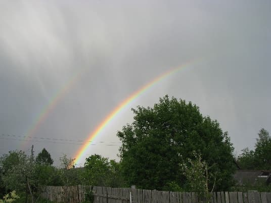
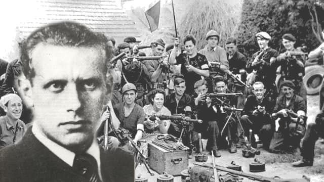

Здесь о примечательных местах: усадьбы, музеи, памятники, кирхи, старинные населённые пункты и прочие любопытные объекты Ингерманландии.
Музей Н. Рериха в Изваре
На территории района множество древних курганов-могильников. Многие из них были вскрыты и описаны еще Николаем Константиновичем Рерихом в конце 19-го века. Его детство и юность прошли в родительском доме в Изваре. "Все особенное, все милое и памятное связано с летними месяцами в Изваре", - писал Рерих об этом времени.
Краеведческий музей в Волосово
Основан 26 апреля 1973 года. Все экспонаты фондов музея безвозмездно предоставлены гражданами на вечное хранение. Музей поддерживается и пополняется усилиями одного человека - его директора, которая благодарна любому участию жителей района в расширении экспозиции.
Открыт для посещений: Пятница, суббота - с 11.00 до 16.00 Экскурсии ежедневно по предварительной записи. Адрес: г. Волосово, ул. Ф. Афанасьева, 3. Телефон: +7(81273) 23-818
Музей Б.Вильде в Ястребино

Широко известно антигитлеровское движение "Сопротивление" во Франции в годы второй мировой войны. Его активный участник и автор названия наш соотечественник Борис Владимирович Вильде. В 1940 году в Париже он организовал выпуск подпольной газеты Resistance (Сопротивление). В марте 1941 года был арестован нацистами, в феврале 1942 года расстрелян. Национальный герой Франции. Его именем названа одна из улиц Парижа. А для нас он, почему-то, "не на слуху".
На мемориальной доске в его честь, слова Шарля де Голя: "Вильде, выдающийся пионер науки, с 1941 года целиком посвятил себя делу подпольного сопротивления, ... явил своим поведением во время суда и под пулями палачей высший пример храбрости и самоотречения".
Сейчас снимается много фильмов о войне в стиле "фэнтэзи", а судьбой реального героя и соотечественника никто не заинтересуется.
В деревне Ястребино дом-музей, в котором Борис Вильде провел свои детские годы.
Сабский историко-краеведческий музей
Находится в деревне Большой Сабск.
Посвящен подвигу курсантов и защитников Лужского оборонительного рубежа, проливавших кровь, защищая Ленинград, в 1941 году.
Телефон: +7 (81373) 6-41-03. Посещение по предварительной договоренности.
Ссылки по мотивам удивительных мест